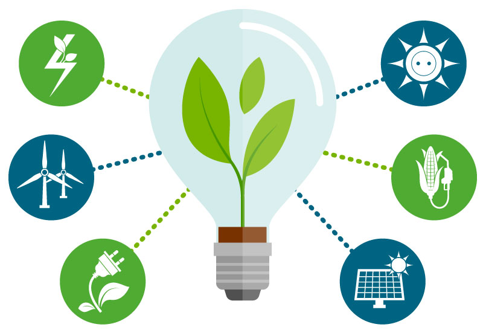

Entre 2000 y 2016, la cantidad de personas con acceso a energía eléctrica aumentó de 78 a 87 por ciento, y el número de personas sin enegía bajó a poco menos de mil millones.
Sin embargo, a la par con el crecimiento de la población mundial, también lo hará la demanda de energía accesible, y una economía global dependiente de los combustibles fósiles está generando cambios drásticos en nuestro clima.
Para alcanzar el ODS7 para 2030, es necesario invertir en fuentes de energía limpia, como la solar, eólica y termal y mejorar la productividad energética.
Expandir la infraestructura y mejorar la tecnología para contar con energía limpia en todos los países en desarrollo, es un objetivo crucial que puede estimular el crecimiento y a la vez ayudar al medio ambiente.
Entre las energías no contaminantes está la hidráulica, la cual tiene su fundamento en la energía potencial. Se va acumulando por los saltos de agua y cuyo fin es transformarse en energía eléctrica.
Las centrales hidroeléctricas se encargan de aprovechar la energía de los ríos. La recaudación de esta se traduce en un 15 % o más del total de la electricidad de algunas ciudades del mundo.
Este método es uno de los más importantes, cuantitativamente, dentro de las energías permanentes. Fuera de ser una fuente energética limpia y natural. Su obtención no depende de un coste de combustible extra para su funcionamiento. Sólo es necesaria la infraestructura para aprovechar el potencial de este recurso natural.
Por otro lado, en cuanto a la energía solar térmica, esta consiste en recoger la energía del sol. Mediante paneles solares y tomar el calor, para destinarlo a satisfacer diferentes necesidades. Por ejemplo, una de las más empleadas es la utilizada para obtener agua caliente. Ya sea para los hogares o para empresas e industrias.
Otro de sus usos consiste en dar calefacción, y quienes más lo ocupan son hoteles, colegios, fábricas e incluso conjuntos residenciales. Además, por su eficiencia se puede trasladar al medio de la agricultura. Esta energía, se puede aplicar a los invernaderos solares. Les proporcionará una mejora tanto en sus cosechas como en su calidad y cantidad en el producto.
Las energías renovables son respetuosas con el medioambiente. La mayoría de ellas no producen emisiones CO2, gases de efecto invernadero u otras emisiones contaminantes a la atmósfera, al contrario que sucede con los combustibles fósiles o renovables. Con estas energías disminuye el efecto invernadero.
